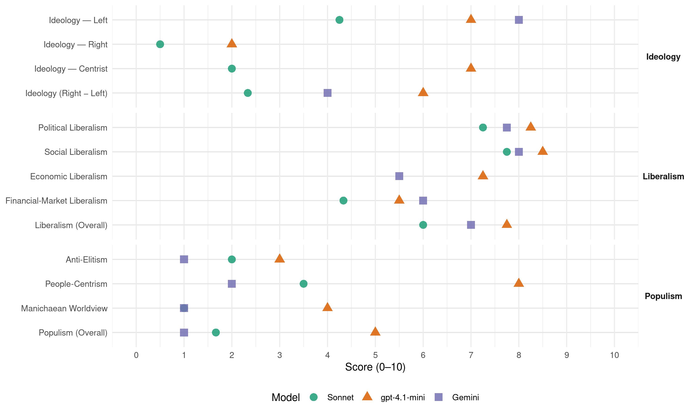

Ap (Norway, 2017)
manifesto_id 12320_201709
Get full text: This site shows derived annotations and short verbatim quotes only. The full manifesto text is © Manifesto Project / WZB — obtain it via manifesto-project.wzb.eu using the manifesto_id above.
Headline scores
| Dimension | Sonnet | gpt-4.1-mini | Gemini |
|---|---|---|---|
| Populism (Overall) | 1.7 | 5.0 | 1.0 |
| Anti-Elitism | 2.0 | 3.0 | 1.0 |
| People-Centrism | 3.5 | 8.0 | 2.0 |
| Manichaean Worldview | 1.0 | 4.0 | 1.0 |
| Ideology (Right − Left) | 2.3 | 6.0 | 4.0 |
| Liberalism (Overall) | 6.0 | 7.8 | 7.0 |
| Political Liberalism | 7.2 | 8.2 | 7.8 |
| Social Liberalism | 7.8 | 8.5 | 8.0 |
| Economic Liberalism | – | 7.2 | 5.5 |
| Financial-Market Liberalism | 4.3 | 5.5 | 6.0 |
Evidence per dimension
Economic Liberalism
Gemini · score 5.0 · mixed · chunk 1
“sikre markedsadgang gjennom EØS-avtalen”
aktivt for å bekjempe arbeidsledighet. Sikre markedsadgang gjennom EØS-avtalen og arbeide opp mot
Gemini · score 5.0 · mixed · chunk 2
“samarbeid mellom offentlig og privat sektor”
ekstraordinære investeringstilskudd Legge til rette for et tett samarbeid mellom offentlig og privat sektor om utvikling av digitale tjenester og plattformer
Gemini · score 5.0 · verified · chunk 3
“solenergiproduksjon på kommersielt grunnlag”
etablere et demonstrasjonsprosjekt for havbasert fornybar teknologi Legge til rette for økt lokal solenergiproduksjon på kommersielt grunnlag Vri virkemiddelbruken
Gemini · score 6.0 · verified · chunk 4
“legger til rette for verdenshandelen”
Forsvare og styrke WTO og det regelverket som legger til rette for verdenshandelen, i en tid der disse utfordres
gpt-4.1-mini · score 7.0 · verified · chunk 1
“Sikre markedsadgang gjennom EØS-avtalen og arbeide opp mot EUs organer for å trygge norske bedrifters muligheter til å konkurrere på lik linje i det europeiske markedet”
ARBEIDERPARTIET VIL: Bruke finanspolitikken aktivt for å bekjempe arbeidsledighet og økte forskjeller Følge handlingsregelen for en forsvarlig innfasing av oljepenger Sikre markedsadgang gjennom EØS-avtalen og arbeide opp mot EUs organer for å trygge norske bedrifters muligheter til å konkurrere på lik linje i det europeiske markedet SKATT OG AVGIFT Arbeiderpartiet vil ha et skatte- og avgiftssystem som stimulerer til arbeid og verdiskaping, styrker norske bedrifter og bidrar til rettferdig fordeling og et bedre miljø.
gpt-4.1-mini · score 7.0 · verified · chunk 2
“stimulere til innovasjon og bærekraftige løsninger i offentlige anbud”
…Bruke avgiftspolitikken aktivt for å stimulere til klimavennlige valg og dermed styrke hjemmemarkedet for klimavennlig teknologi. Stimulere til innovasjon og bærekraftige løsninger i offentlige anbud…
gpt-4.1-mini · score 7.0 · verified · chunk 3
“Styrke norske kompetansemiljøer som ligger i front i utnyttelsen av biobaserte ressurser”
ARBEIDERPARTIET VIL: Styrke norske kompetansemiljøer som ligger i front i utnyttelsen av biobaserte ressurser Styrke utdanningsløpet ved universiteter og høyskoler innen biobaserte næringer Støtte forskning og innovasjon for utvikling av nye produkter og lønnsomme verdikjeder basert på bioråstoff
gpt-4.1-mini · score 8.0 · verified · chunk 4
“Arbeide for å styrke WTOs rolle Arbeide for at regionale og flernasjonale handelsavtaler tar inn grunnleggende standarder og rettigheter”
Arbeide for å styrke WTOs rolle Arbeide for at regionale og flernasjonale handelsavtaler tar inn grunnleggende standarder og rettigheter, som også kan bygges inn i globale handelsavtaler i regi av WTO At Norge inntar en ledende rolle i det internasjonale arbeidet for å bekjempe ulovlig kapitalflyt og skatteunndragelse
Sonnet · score 5.0 · mixed · chunk 1
“Sikre markedsadgang gjennom EØS-avtalen”
Sikre markedsadgang gjennom EØS-avtalen og arbeide opp mot EUs organer for å trygge norske bedrifters muligheter til å konkurrere på lik linje i det europeiske markedet
Sonnet · score 5.0 · mixed · chunk 2
“Avvikle privatiseringsreformen «Fritt behandlingsvalg»”
Avvikle privatiseringsreformen «Fritt behandlingsvalg» og bruke ressursene på tiltak vi vet reduserer ventetid
Sonnet · score 5.0 · mixed · chunk 3
“lokale leverandører kan delta i konkurransen om viktige kontrakter”
slik at lokale leverandører kan delta i konkurransen om viktige kontrakter. Legge til rette for videreutvikling av leverandørindustrien
Sonnet · score 5.0 · mixed · chunk 4
“Forsvare og styrke WTO og det regelverket”
Forsvare og styrke WTO og det regelverket som legger til rette for verdenshandelen, i en tid der disse utfordres fra mange hold
Financial-Market Liberalism
Gemini · score 5.0 · verified · chunk 1
“stabilt og velfungerende finansmarked”
tiltak for å sikre et stabilt og velfungerende finansmarked. Sikre en ansvarlig utlånspraksis
Gemini · score 7.0 · verified · chunk 4
“tilsyn som Datatilsynet og Finanstilsynet”
nye digitale tjenester i tett samarbeid med tilsyn som Datatilsynet og Finanstilsynet Domstol og rettshjelp Domstolenes
gpt-4.1-mini · score 4.0 · verified · chunk 1
“Det er nødvendig med politisk styring av finansmarkedene gjennom reguleringer som kan forebygge kriser og sikre tillit, demokratisk innsyn og forbrukerinteresser.”
Den internasjonale finanskrisen i 2008 bekreftet at markedet ikke kan overlates til seg selv. Det er nødvendig med politisk styring av finansmarkedene gjennom reguleringer som kan forebygge kriser og sikre tillit, demokratisk innsyn og forbrukerinteresser. ARBEIDERPARTIET VIL: Gjennomføre nødvendige tiltak for å sikre et stabilt og velfungerende finansmarked Sikre en ansvarlig utlånspraksis fra finansinstitusjoner i Norge og begrense muligheten for privatpersoner til å pådra seg uhåndterlig, usikret gjeld
gpt-4.1-mini · score 7.0 · verified · chunk 4
“Utvide de etiske retningslinjene for Statens pensjonsfond utland til å inkludere krav til åpenhet og rapportering fra flernasjonale selskaper”
At Norge inntar en ledende rolle i det internasjonale arbeidet for å bekjempe ulovlig kapitalflyt og skatteunndragelse Utvide de etiske retningslinjene for Statens pensjonsfond utland til å inkludere krav til åpenhet og rapportering fra flernasjonale selskaper. Selskaper med grove mangler i sin rapportering bør ekskluderes Kreve at avtaler om tjenestehandel ikke legger hindringer for å regulere forhold som forbrukerbeskyttelse, helse, sikkerhet, miljø og arbeidstakerrettigheter
Sonnet · score 4.0 · verified · chunk 1
“markedet ikke kan overlates til seg selv”
Den internasjonale finanskrisen i 2008 bekreftet at markedet ikke kan overlates til seg selv. Det er nødvendig med politisk styring av finansmarkedene gjennom reguleringer som kan forebygge kriser og sikre tillit
Sonnet · score 5.0 · verified · chunk 3
“Skjerpede krav til markedsføring av kreditt”
Jobbe for felles europeiske løsninger for bedre forbrukervern, blant annet: Et nytt gjeldsregister Skjerpede krav til markedsføring av kreditt
Sonnet · score 4.0 · verified · chunk 4
“bekjempe ulovlig kapitalflyt og skatteunndragelse”
At Norge inntar en ledende rolle i det internasjonale arbeidet for å bekjempe ulovlig kapitalflyt og skatteunndragelse
Political Liberalism
Gemini · score 8.0 · verified · chunk 1
“ytringsfrihet og trosfrihet”
måter i andre deler av verden. Det samme gjelder ytringsfrihet og trosfrihet. Solidaritet handler ikke
Gemini · score 7.0 · verified · chunk 2
“styringsmekanismer for å nå de utslippsmålene”
overordnet styringsinstrument i klimapolitikken. Den skal inneholde styringsmekanismer for å nå de utslippsmålene som loven fastsetter. Målene skal være
Gemini · score 8.0 · verified · chunk 3
“sentrale for folkeopplysning, demokrati og opplevelse”
Nyhets- og aktualitetsmediene er sentrale for folkeopplysning, demokrati og opplevelse av fellesskap.
Gemini · score 8.0 · verified · chunk 4
“menneskerettighetene og rettsstatsprinsipper”
Lovverket skal bidra til større samfunnssikkerhet innenfor rammene av menneskerettighetene og rettsstatsprinsipper. Ettersom digitaliseringens betydning øker
gpt-4.1-mini · score 8.0 · verified · chunk 1
“styrke internasjonale organisasjoner, folkeretten og menneskerettigheter for alle”
Våre mål for Norge kan best realiseres dersom vi bidrar til å styrke internasjonale organisasjoner, folkeretten og menneskerettigheter for alle. Arbeiderpartiet vil kjempe for likestilling og arbeidstakerrettigheter slik at mennesker i andre deler av verden også får muligheten til å leve frie liv. Det samme gjelder ytringsfrihet og trosfrihet.
gpt-4.1-mini · score 8.0 · verified · chunk 2
“demokrati, rettigheter, valg, domstoler, media, regjering, parlament”
…må ha tid nok. Fremover må kommunene ha tilstrekkelig bemanning, mer variert kompetanse og bedre organisering av tjenestene. Demokrati, rettigheter, valg, domstoler, media, regjering, parlament er viktige institusjoner…
gpt-4.1-mini · score 8.0 · verified · chunk 3
“Sikre offentlig eierskap og kontroll i jernbanesektoren”
ARBEIDERPARTIET VIL: Sikre offentlig eierskap og kontroll i jernbanesektoren Prioritere å ta igjen vedlikeholdsetterslepet på jernbanen Prioritere ferdigstillelsen av allerede vedtatte jernbanestrekninger
gpt-4.1-mini · score 9.0 · verified · chunk 4
“Lovverket skal bidra til større samfunnssikkerhet innenfor rammene av menneskerettighetene og rettsstatsprinsipper”
Det kan også oppstå konflikter mellom behovet for nye politimetoder og hensynet til personvern og rettssikkerhet. Lovverket skal bidra til større samfunnssikkerhet innenfor rammene av menneskerettighetene og rettsstatsprinsipper. Ettersom digitaliseringens betydning øker, øker også nødvendigheten av å styrke forbrukeren og borgerens forståelse og evne til å ta informerte valg.
Sonnet · score 7.0 · verified · chunk 1
“demokratisk innsyn og forbrukerinteresser”
Det er nødvendig med politisk styring av finansmarkedene gjennom reguleringer som kan forebygge kriser og sikre tillit, demokratisk innsyn og forbrukerinteresser.
Sonnet · score 7.0 · verified · chunk 2
“økt politisk styring av sykehusene”
Sørge for økt politisk styring av sykehusene og at sykehusene samhandler bedre med primærhelsetjenesten
Sonnet · score 7.0 · verified · chunk 3
“Nyhets- og aktualitetsmediene er sentrale for folkeopplysning, demokrati”
Nyhets- og aktualitetsmediene er sentrale for folkeopplysning, demokrati og opplevelse av fellesskap. Digitalisering har ført til at medievaner
Sonnet · score 8.0 · verified · chunk 4
“demokrati, menneskerettigheter og bærekraftig utvikling”
forankret i våre grunnleggende sosialdemokratiske verdier: frihet, internasjonal solidaritet og samarbeid, demokrati, menneskerettigheter og bærekraftig utvikling
Liberalism (Overall)
Gemini · score 7.0 · verified · chunk 1
“ytringsfrihet og trosfrihet”
måter i andre deler av verden. Det samme gjelder ytringsfrihet og trosfrihet. Solidaritet handler ikke
Gemini · score 7.0 · verified · chunk 2
“samarbeid mellom offentlig og privat sektor”
ekstraordinære investeringstilskudd Legge til rette for et tett samarbeid mellom offentlig og privat sektor om utvikling av digitale tjenester og plattformer
Gemini · score 7.0 · verified · chunk 3
“Trosfrihet er en menneskerett”
Norge har en kristen og humanistisk arv. Trosfrihet er en menneskerett. Samtidig står friheten
Gemini · score 7.0 · verified · chunk 4
“menneskerettighetene og rettsstatsprinsipper”
Lovverket skal bidra til større samfunnssikkerhet innenfor rammene av menneskerettighetene og rettsstatsprinsipper. Ettersom digitaliseringens betydning øker
gpt-4.1-mini · score 7.0 · verified · chunk 1
“Sikre markedsadgang gjennom EØS-avtalen og arbeide opp mot EUs organer for å trygge norske bedrifters muligheter til å konkurrere på lik linje i det europeiske markedet”
ARBEIDERPARTIET VIL: Bruke finanspolitikken aktivt for å bekjempe arbeidsledighet og økte forskjeller Følge handlingsregelen for en forsvarlig innfasing av oljepenger Sikre markedsadgang gjennom EØS-avtalen og arbeide opp mot EUs organer for å trygge norske bedrifters muligheter til å konkurrere på lik linje i det europeiske markedet SKATT OG AVGIFT Arbeiderpartiet vil ha et skatte- og avgiftssystem som stimulerer til arbeid og verdiskaping, styrker norske bedrifter og bidrar til rettferdig fordeling og et bedre miljø.
gpt-4.1-mini · score 8.0 · verified · chunk 2
“demokrati, rettigheter, valg, domstoler, media, regjering, parlament”
…må ha tid nok. Fremover må kommunene ha tilstrekkelig bemanning, mer variert kompetanse og bedre organisering av tjenestene. Demokrati, rettigheter, valg, domstoler, media, regjering, parlament er viktige institusjoner…
gpt-4.1-mini · score 8.0 · verified · chunk 3
“Sikre offentlig eierskap og kontroll i jernbanesektoren”
ARBEIDERPARTIET VIL: Sikre offentlig eierskap og kontroll i jernbanesektoren Prioritere å ta igjen vedlikeholdsetterslepet på jernbanen Prioritere ferdigstillelsen av allerede vedtatte jernbanestrekninger
gpt-4.1-mini · score 8.0 · verified · chunk 4
“Lovverket skal bidra til større samfunnssikkerhet innenfor rammene av menneskerettighetene og rettsstatsprinsipper”
Det kan også oppstå konflikter mellom behovet for nye politimetoder og hensynet til personvern og rettssikkerhet. Lovverket skal bidra til større samfunnssikkerhet innenfor rammene av menneskerettighetene og rettsstatsprinsipper. Ettersom digitaliseringens betydning øker, øker også nødvendigheten av å styrke forbrukeren og borgerens forståelse og evne til å ta informerte valg.
Sonnet · score 6.0 · verified · chunk 1
“Arbeiderpartiet vil kjempe for likestilling og arbeidstakerrettigheter”
Arbeiderpartiet vil kjempe for likestilling og arbeidstakerrettigheter slik at mennesker i andre deler av verden også får muligheten til å leve frie liv. Det samme gjelder ytringsfrihet og trosfrihet.
Sonnet · score 6.0 · verified · chunk 2
“minoriteter gjennom digitale oversettelsesverktøy”
Gjøre helsetilbudet mer tilgjengelig for minoriteter gjennom digitale oversettelsesverktøy og tilbud om tolk
Sonnet · score 6.0 · verified · chunk 3
“ytringsfrihet og medienes mulighet til å fylle sin samfunnsrolle”
vil ta et større politisk ansvar for å sikre ytringsfrihet og medienes mulighet til å fylle sin samfunnsrolle i alle deler av landet
Sonnet · score 6.0 · verified · chunk 4
“demokrati, menneskerettigheter og bærekraftig utvikling”
forankret i våre grunnlaggende sosialdemokratiske verdier: frihet, internasjonal solidaritet og samarbeid, demokrati, menneskerettigheter og bærekraftig utvikling
Anti-Elitism
Gemini · score 1.0 · verified · chunk 1
“byråkratiserende reformer skal stanses”
bremse seneste års byråkrativekst. Byråkratiserende reformer skal stanses eller avvikles. Vi trenger et
gpt-4.1-mini · score 3.0 · verified · chunk 1
“skattekuttene i perioden 2014–2017 har i all hovedsak kommet de mest velstående i Norge til gode”
Utgiftsveksten har vært høy samtidig som inntektene er redusert gjennom skattekutt. Som et resultat er veksten i bruk av oljepenger på et nivå som ikke kan opprettholdes over tid. Skattekuttene i perioden 2014–2017 har i all hovedsak kommet de mest velstående i Norge til gode. Kuttene har ikke gitt resultater i form av flere arbeidsplasser og økonomisk vekst, men mest av alt bidratt til å øke forskjellene mellom mennesker.
Sonnet · score 2.0 · verified · chunk 1
“Skattekuttene i perioden 2014–2017 har i all hovedsak kommet de mest velstående i Norge til gode”
Det politiske flertallet på Stortinget har i den siste stortingsperioden økt budsjettunderskuddet kraftig. Skattekuttene i perioden 2014–2017 har i all hovedsak kommet de mest velstående i Norge til gode. Kuttene har ikke gitt resultater i form av flere arbeidsplasser
Sonnet · score 2.0 · mixed · chunk 3
“sosial dumping og lavlønnskonkurranse”
avmekanisering, svak verdiskaping og sterke innslag av sosial dumping og lavlønnskonkurranse. I Norge skal det i årene
Sonnet · score 2.0 · verified · chunk 4
“bekjempe ulovlig kapitalflyt og skatteunndragelse”
At Norge inntar en ledende rolle i det internasjonale arbeidet for å bekjempe ulovlig kapitalflyt og skatteunndragelse
Ideology — Centrist
gpt-4.1-mini · score 7.0 · verified · chunk 1
“Arbeiderbevegelsen er internasjonal. Vårt arbeid for frihet, muligheter og trygghet stanser ikke ved våre landegrenser.”
Det europeiske samarbeidet opplever store spenninger. Den sikkerhetspolitiske situasjonen er mer uforutsigbar. Ekstreme ideologier er flere steder på fremmarsj. Arbeiderbevegelsen er internasjonal. Vårt arbeid for frihet, muligheter og trygghet stanser ikke ved våre landegrenser. En mer rettferdig verden er også en mer stabil verden. Våre mål for Norge kan best realiseres dersom vi bidrar til å styrke internasjonale organisasjoner, folkeretten og menneskerettigheter for alle.
Sonnet · score 2.0 · verified · chunk 1
“Alle skal med”
PARTIPROGRAM 2017–2021 Alle skal med. Våre verdier og vår tid Arbeiderpartiets mål er frihet, muligheter og trygghet for alle.
Sonnet · score 2.0 · verified · chunk 4
“folk flest”
må det legges til rette for økt tilgang til rettslig bistand for folk flest
Ideology — Left
Gemini · score 8.0 · verified · chunk 1
“formue og høye inntekter får”
vanlige lønnsinntekter beskattes om lag som i dag, mens formue og høye inntekter får økt beskatning.
gpt-4.1-mini · score 7.0 · verified · chunk 1
“God fordeling er et viktig konkurransefortrinn for Norge. Koordinert lønnsdannelse, skatt og overføringer og offentlige tjenester som utdanning og helsetjenester bidrar til omfordeling, mindre forskjeller, større sosial mobilitet og større muligheter for flere.”
Arbeid er vår viktigste ressurs. Vår evne til å finansiere fremtidens velferdsstat avhenger av hvor godt vi lykkes med å inkludere alle i arbeidslivet. Alle som kan jobbe, skal jobbe. God fordeling er et viktig konkurransefortrinn for Norge. Koordinert lønnsdannelse, skatt og overføringer og offentlige tjenester som utdanning og helsetjenester bidrar til omfordeling, mindre forskjeller, større sosial mobilitet og større muligheter for flere.
Sonnet · score 5.0 · verified · chunk 1
“God fordeling er et viktig konkurransefortrinn for Norge”
Arbeid er vår viktigste ressurs. Vår evne til å finansiere fremtidens velferdsstat avhenger av hvor godt vi lykkes med å inkludere alle i arbeidslivet. Alle som kan jobbe, skal jobbe. God fordeling er et viktig konkurransefortrinn for Norge.
Sonnet · score 4.0 · verified · chunk 2
“Ha et sterkt statlig eierskap”
ARBEIDERPARTIET VIL: Ha et sterkt statlig eierskap, som sikrer kontroll over naturressurser, viktig infrastruktur
Sonnet · score 4.0 · verified · chunk 3
“Sikre strategisk eierskap og risikokapital i skogsindustrien”
Sikre strategisk eierskap og risikokapital i skogsindustrien gjennom blant annet Investinor
Sonnet · score 4.0 · verified · chunk 4
“Prioritere næringsutvikling, sysselsetting og anstendig arbeid”
Prioritere næringsutvikling, sysselsetting og anstendig arbeid i utviklingsbistanden innenfor rammen av organisert arbeidsliv
Ideology (Right − Left)
Gemini · score 4.0 · verified · chunk 1
“formue og høye inntekter får”
vanlige lønnsinntekter beskattes om lag som i dag, mens formue og høye inntekter får økt beskatning.
gpt-4.1-mini · score 6.0 · verified · chunk 1
“God fordeling er et viktig konkurransefortrinn for Norge. Koordinert lønnsdannelse, skatt og overføringer og offentlige tjenester som utdanning og helsetjenester bidrar til omfordeling, mindre forskjeller, større sosial mobilitet og større muligheter for flere.”
Arbeid er vår viktigste ressurs. Vår evne til å finansiere fremtidens velferdsstat avhenger av hvor godt vi lykkes med å inkludere alle i arbeidslivet. Alle som kan jobbe, skal jobbe. God fordeling er et viktig konkurransefortrinn for Norge. Koordinert lønnsdannelse, skatt og overføringer og offentlige tjenester som utdanning og helsetjenester bidrar til omfordeling, mindre forskjeller, større sosial mobilitet og større muligheter for flere.
Sonnet · score 3.0 · verified · chunk 1
“God fordeling er et viktig konkurransefortrinn for Norge”
Arbeid er vår viktigste ressurs. Vår evne til å finansiere fremtidens velferdsstat avhenger av hvor godt vi lykkes med å inkludere alle i arbeidslivet. Alle som kan jobbe, skal jobbe. God fordeling er et viktig konkurransefortrinn for Norge.
Sonnet · score 2.0 · verified · chunk 2
“Ha et sterkt statlig eierskap”
ARBEIDERPARTIET VIL: Ha et sterkt statlig eierskap, som sikrer kontroll over naturressurser, viktig infrastruktur
Sonnet · score 3.0 · mixed · chunk 3
“Sikre offentlig eierskap og kontroll i jernbanesektoren”
ARBEIDERPARTIET VIL: Sikre offentlig eierskap og kontroll i jernbanesektoren
Sonnet · score 2.0 · verified · chunk 4
“Prioritere næringsutvikling, sysselsetting og anstendig arbeid”
Prioritere næringsutvikling, sysselsetting og anstendig arbeid i utviklingsbistanden innenfor rammen av organisert arbeidsliv
Ideology — Right
gpt-4.1-mini · score 2.0 · verified · chunk 1
“I vår tid finnes krefter som spiller grupper ut mot hverandre. Oss mot dem, menn mot kvinner, by mot land”
Solidaritet handler ikke bare om å ta vare på dem som faller utenfor. Det handler om å ta vare på hverandre. Alle kan oppleve å stå alene, men hver enkelt av oss står sterkere når vi står sammen. I vår tid finnes krefter som spiller grupper ut mot hverandre. Oss mot dem, menn mot kvinner, by mot land. Å stå utenfor er starten på marginalisering og ekskludering. Det er starten på å oppleve lite eller ikke noe ansvar for fellesskapet.
Sonnet · score 0.0 · verified · chunk 1
“Vi vil skape et Norge der folk kan være forskjellige, men likeverdige”
Arbeiderbevegelsens historiske innsats har vært å bringe folk sammen. Denne innsatsen trengs på ny. Vi vil skape et Norge der folk kan være forskjellige, men likeverdige.
Sonnet · score 1.0 · verified · chunk 4
“norsk suverenitet”
Med våre store hav- og landområder må Forsvaret kunne håndheve norsk suverenitet
Manichaean Worldview
Gemini · score 1.0 · verified · chunk 1
“krefter som spiller grupper ut”
I vår tid finnes krefter som spiller grupper ut mot hverandre. Oss mot dem, menn
gpt-4.1-mini · score 4.0 · verified · chunk 1
“I vår tid finnes krefter som spiller grupper ut mot hverandre. Oss mot dem, menn mot kvinner, by mot land”
Solidaritet handler ikke bare om å ta vare på dem som faller utenfor. Det handler om å ta vare på hverandre. Alle kan oppleve å stå alene, men hver enkelt av oss står sterkere når vi står sammen. I vår tid finnes krefter som spiller grupper ut mot hverandre. Oss mot dem, menn mot kvinner, by mot land. Å stå utenfor er starten på marginalisering og ekskludering. Det er starten på å oppleve lite eller ikke noe ansvar for fellesskapet.
Sonnet · score 1.0 · verified · chunk 1
“I vår tid finnes krefter som spiller grupper ut mot hverandre”
Solidaritet handler ikke bare om å ta vare på dem som faller utenfor. Det handler om å ta vare på hverandre. I vår tid finnes krefter som spiller grupper ut mot hverandre. Oss mot dem, menn mot kvinner, by mot land.
Sonnet · score 1.0 · verified · chunk 4
“nasjonalisme, proteksjonisme og fremmedhat er på fremmarsj”
Stå tydelig opp for verdiene av et åpent, samarbeidende og nært sammenknyttet Europa i en tid der nasjonalisme, proteksjonisme og fremmedhat er på fremmarsj
People-Centrism
Gemini · score 2.0 · verified · chunk 1
“menneskene selv skaper sin egen”
arv er vissheten om at menneskene selv skaper sin egen historie. Vi skaper vår egen fremtid.
gpt-4.1-mini · score 8.0 · verified · chunk 1
“Alle skal bidra, fordi alle trengs”
Arbeid er derfor dette partiprogrammets røde tråd. Den største forskjellen i velstand og velferd går mellom de som har og de som ikke har arbeid. Derfor er også trygghet for å få arbeid og trygghet når man er i arbeid, det viktigste for å redusere de sosiale og økonomiske forskjellene mellom folk. Veksten fremover må finne sted i pakt med de to generasjonskontraktene vi har med våre etterkommere. Vi har et ansvar for å spare verdier til generasjonene etter oss. Vi har et ansvar for å sikre at vekst og verdiskaping skjer på en måte som er bærekraftig for naturen. Landet vårt er unikt. Vi bor i byer, tettsteder, fjordarmer og åssider. Vi vil ta hele dette langstrakte og mangfoldige landet i bruk. Vi har mange naturgitte fortrinn, og havet står i en særklasse. Ikke noe land er i bedre posisjon til å lede an i utviklingen av havets muligheter enn Norge. Fremover vil vi prioritere slike strategisk viktige næringsområder, der landet vårt har spesielle forutsetninger for å lykkes. Det vil styrke oss som teknologi- og industrinasjon. Det vil skape vekst og arbeidsplasser. Årene som ligger foran oss, vil teste våre evner til endring. Nye, grønne industrier vil bli etablert. Teknologi og digitalisering vil bli sentralt på arbeidsplasser i alle sektorer, på alle nivåer. Det ligger store muligheter i teknologiutviklingen. Pasienter kan få raskere og bedre hjelp. Våre eldre kan leve frie og selvstendige liv lenger. Samtidig vil nye krav kunne støte flere ut av arbeidslivet. Arbeidstakerrettigheter kan på ny komme under press. Personvernet kan bli utfordret. Vår oppgave er å sikre at alle kan nyte godt av den teknologiske utviklingen, bygge sin kompetanse og oppleve trygghet for sine rettigheter Slik vil teknologiutviklingen gi folk og bedrifter flere muligheter og bidra til vekst og verdiskaping. Det europeiske samarbeidet opplever store spenninger. Den sikkerhetspolitiske situasjonen er mer uforutsigbar. Ekstreme ideologier er flere steder på fremmarsj. Arbeiderbevegelsen er internasjonal. Vårt arbeid for frihet, muligheter og trygghet stanser ikke ved våre landegrenser. En mer rettferdig verden er også en mer stabil verden. Våre mål for Norge kan best realiseres dersom vi bidrar til å styrke internasjonale organisasjoner, folkeretten og menneskerettigheter for alle. Arbeiderpartiet vil kjempe for likestilling og arbeidstakerrettigheter slik at mennesker i andre deler av verden også får muligheten til å leve frie liv. Det samme gjelder ytringsfrihet og trosfrihet. Solidaritet handler ikke bare om å ta vare på dem som faller utenfor. Det handler om å ta vare på hverandre. Alle kan oppleve å stå alene, men hver enkelt av oss står sterkere når vi står sammen. I vår tid finnes krefter som spiller grupper ut mot hverandre. Oss mot dem, menn mot kvinner, by mot land. Å stå utenfor er starten på marginalisering og ekskludering. Det er starten på å oppleve lite eller ikke noe ansvar for fellesskapet. Arbeiderbevegelsens historiske innsats har vært å bringe folk sammen. Denne innsatsen trengs på ny. Vi vil skape et Norge der folk kan være forskjellige, men likeverdige. Vi vil skape et Norge der alle skal bidra, fordi alle trengs. Alle skal med.
Sonnet · score 4.0 · verified · chunk 1
“Alle skal bidra, fordi alle trengs”
Arbeid er nøkkelen til frihet og selvstendighet for den enkelte. Det er også grunnlaget for vekst og verdiskaping for landet. Det er forutsetningen for vår velferdsmodell. Alle skal bidra, fordi alle trengs.
Sonnet · score 3.0 · verified · chunk 2
“fiskeressursene også i fremtiden skal tilhøre folket i fellesskap”
Garantere for at fiskeressursene også i fremtiden skal tilhøre folket i fellesskap: Vi vil sikre en fiskereid flåte
Sonnet · score 4.0 · verified · chunk 3
“oljen og gassen på norsk sokkel er verdifulle ressurser som tilhører fellesskapet”
Oljen og gassen på norsk sokkel er verdifulle ressurser som tilhører fellesskapet. Ressursforvaltningen skal komme norsk industriell utvikling
Sonnet · score 3.0 · verified · chunk 4
“folk flest”
må det legges til rette for økt tilgang til rettslig bistand for folk flest
Populism (Overall)
Gemini · score 1.0 · verified · chunk 1
“krefter som spiller grupper ut”
I vår tid finnes krefter som spiller grupper ut mot hverandre. Oss mot dem, menn
gpt-4.1-mini · score 5.0 · verified · chunk 1
“skattekuttene i perioden 2014–2017 har i all hovedsak kommet de mest velstående i Norge til gode”
Utgiftsveksten har vært høy samtidig som inntektene er redusert gjennom skattekutt. Som et resultat er veksten i bruk av oljepenger på et nivå som ikke kan opprettholdes over tid. Skattekuttene i perioden 2014–2017 har i all hovedsak kommet de mest velstående i Norge til gode. Kuttene har ikke gitt resultater i form av flere arbeidsplasser og økonomisk vekst, men mest av alt bidratt til å øke forskjellene mellom mennesker.
Sonnet · score 2.0 · verified · chunk 1
“Alle skal bidra, fordi alle trengs”
Arbeid er nøkkelen til frihet og selvstendighet for den enkelte. Det er også grunnlaget for vekst og verdiskaping for landet. Det er forutsetningen for vår velferdsmodell. Alle skal bidra, fordi alle trengs.
Sonnet · score 1.0 · verified · chunk 2
“fiskeressursene også i fremtiden skal tilhøre folket i fellesskap”
Garantere for at fiskeressursene også i fremtiden skal tilhøre folket i fellesskap: Vi vil sikre en fiskereid flåte
Sonnet · score 2.0 · mixed · chunk 3
“tilhører fellesskapet”
Oljen og gassen på norsk sokkel er verdifulle ressurser som tilhører fellesskapet. Ressursforvaltningen skal komme norsk industriell utvikling
Sonnet · score 2.0 · verified · chunk 4
“folk flest”
må det legges til rette for økt tilgang til rettslig bistand for folk flest
Social Liberalism